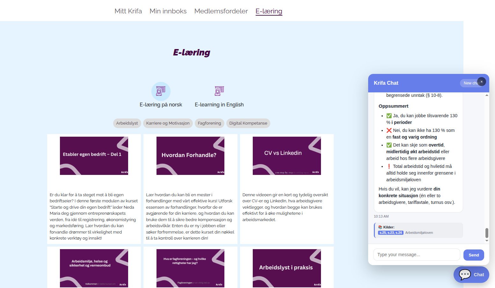

Krifa RAG: Norwegian Legal Text Retrieval Chatbot
March 2026 - Building a production-grade Retrieval-Augmented Generation system for Norwegian labor law, deployed as an embeddable widget for Krifa members
Overview

Krifa is one of Norway's largest unions, supporting its members with workplace rights, employment contracts, and labor law guidance. This project delivered a production RAG-powered chatbot that allows Krifa members to ask natural language questions about Norwegian labor law and receive accurate, sourced answers — all within an embeddable chat widget integrated directly into their e-learning platform.
The core dataset was the Norwegian Working Environment Act (Arbeidsmiljøloven), provided and curated by a dedicated team of Krifa lawyers.
The Challenge
Legal text retrieval is fundamentally different from general-purpose search. Norwegian labor law is dense, interconnected, and full of exceptions — making naive RAG approaches fail in subtle but critical ways.
The key difficulties included:
- Highly conditional clauses: A single law section often contains multiple exceptions and cross-references to other paragraphs (e.g., §10-8 referencing §5-25, §23, §24)
- Domain-specific language: Norwegian legal terminology requires precise understanding — a small semantic drift in retrieval can return a plausible but legally wrong answer
- Clause interdependencies: Questions rarely map to a single chunk; correct answers often require combining information from several related sections
- Validation bar: The ground truth was set by practicing lawyers — the margin for error was essentially zero
Solution: RAG with FAISS and Smarter Data Preparation
Rather than applying a standard out-of-the-box RAG pipeline, we invested heavily in the data preparation and retrieval layers to handle the complexity of legal text.
⚙️ Tech Overview
- Retrieval: FAISS (Facebook AI Similarity Search) — selected after benchmarking against Azure AI Search and Chroma for cost efficiency and retrieval quality at scale
- Chunking Strategy: Custom legal-aware chunking that respects paragraph and clause boundaries, keeping cross-referenced sections linked rather than splitting them arbitrarily
- Embeddings: Dense vector embeddings tuned for Norwegian legal language
- LLM Layer: Prompt-engineered to surface source citations (paragraph numbers) alongside every answer
- Validation: Gold dataset constructed by the Krifa lawyer team, used for end-to-end retrieval and response accuracy testing
- Deployment: Packaged as a lightweight JavaScript chat widget — clients embed it on any page with a single script tag
The Retrieval Benchmarking Process
We evaluated three retrieval backends:
| Backend | Strengths | Why Not Deployed |
|---|---|---|
| Azure AI Search | Managed, scalable, hybrid search | Cost at scale; less control over chunking |
| Chroma | Simple setup, good for prototyping | Performance at production volume |
| FAISS | Fast, cost-efficient, fully controllable | Selected for production |
FAISS gave us full control over the index structure and allowed the optimizations needed to handle the legal corpus correctly without ongoing cloud retrieval costs.
The Hard Part: Chunking Legal Text
The biggest technical breakthrough in this project was moving away from fixed-size chunking. Early versions performed poorly because:
- Splitting mid-paragraph broke the logical context of a clause
- Exception phrases like "med unntak av" (with the exception of) would be separated from the rule they modified
- Cross-references to other sections were lost, leaving the retriever unable to connect related rules
The solution was a structure-aware chunking pipeline that:
- Parsed the legal document by section and paragraph markers
- Kept clause headers attached to their body text
- Embedded cross-reference metadata so related sections could be retrieved together
- Applied overlap between adjacent chunks to preserve boundary context
This dramatically improved recall on questions that spanned multiple sections.
Validation: Lawyers as the Ground Truth
A gold dataset was constructed manually by the Krifa legal team — real questions members ask, paired with the correct legal answers and the exact source paragraphs. This was used to measure:
- Retrieval accuracy: Did the right paragraph(s) get returned?
- Answer faithfulness: Was the generated answer grounded in the retrieved text?
- End-to-end correctness: Did the final response match what a lawyer would say?
The lawyers reviewed the outputs and were both satisfied and surprised by the accuracy. Getting there required multiple rounds of iteration — adjusting chunk boundaries, tuning retrieval parameters, and refining prompts — but the gold dataset gave us an objective signal at every step.
The Widget
The final product was packaged as an embeddable "Krifa Chat" widget. Key design decisions:
- Source transparency: Every answer surfaces the specific paragraph numbers (e.g., §5-25, §23, §24 — Arbeidsmiljøloven) so members and lawyers can verify the reference
- Zero friction embedding: A single script tag drops the widget into any page
- Stateless sessions: Each conversation is independent, keeping data simple and compliant
- Bilingual support: The platform supports both Norwegian and English member interactions
What I Learned
This project pushed the limits of what RAG can do with structured legal corpora:
- Chunking is the most critical layer: Retrieval quality is largely determined before the LLM ever sees the text — poor chunking cannot be compensated for downstream
- Domain experts are essential: The gold dataset from lawyers was invaluable; without it, we would have been optimizing in the dark
- Benchmarking backends early pays off: Testing Azure AI Search, Chroma, and FAISS upfront saved us from a costly late-stage migration
- Legal text demands structured parsing: Generic document loaders are not sufficient for law — the document structure carries meaning that must be preserved
Results
- Lawyers validated the system and approved it for member use
- Retrieval accuracy on the gold dataset met the quality bar set by the legal team
- Deployed as a production widget on Krifa's e-learning platform
- Members can now get instant, sourced answers to Norwegian labor law questions 24/7
This project demonstrates that RAG systems for legal domains require domain-aware engineering at every layer — from document parsing and chunking to retrieval tuning and expert-driven validation. The combination of FAISS, structure-aware chunking, and a lawyer-constructed gold dataset made it possible to deliver a system that legal professionals trust.